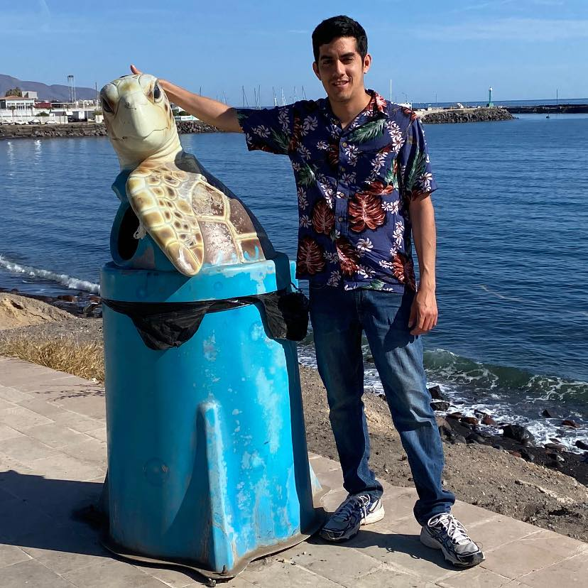

Lenguajes gesto-espaciales
| Person | Ernesto Adrian Lozano De la Parra Carlos Sanchez Carlos Sanchez |
|---|
Resumen
Framework para interpretar lenguaje gesto-espaciales.
Web
https://msl.sanchezcarlosjr.com/
Repositorio (Código)
https://github.com/sanchezcarlosjr/mexican_sign_language_toolkit
Instalación para CLI
pip install mexican_sign_language_toolkitIntroducción
La interpretación del lenguaje gesto-espacial emerge como un medio significativo para facilitar una comunicación más fluida entre las personas. Además, desde una perspectiva económica, el uso de cámaras se presenta como una opción más accesible y menos costosa en comparación con otros sensores especializados. En este contexto, proponemos un marco de trabajo diseñado específicamente para interpretar gestos, expresiones faciales y otros signos no verbales. Este enfoque puede desempeñar un papel crucial en la comprensión de las necesidades, deseos y emociones de los pacientes, especialmente aquellos con demencia, quienes a menudo enfrentan desafíos significativos para comunicarse mediante el lenguaje convencional.
Por ende, nuestra herramienta propuesta ofrece una alternativa valiosa y efectiva para captar y transmitir sus mensajes de manera más clara y precisa. En particular, proponemos interpretar la lengua de señas mexicana para facilitar la comunicación entre las personas sordas o con problemas auditivos y aquellas que no conocen la lengua de señas mexicana, como es el caso del trabajo de \citep{morfin_ricardo_2023}. Esta herramienta no solo eliminará barreras de comunicación, sino que también promoverá la inclusión social de las personas sordas, permitiéndoles participar de manera más activa y efectiva en la vida cotidiana y social. El objetivo principal de este escenario es describir las etapas para la interpretación de lenguaje gesto-espacial y el software asociado (https://github.com/sanchezcarlosjr/mexican_sign_language_toolkit/), así como presentar como caso de estudio la lengua de señas mexicana. Esto implica el uso aprendizaje de máquina y el procesamiento de imágenes, para mejorar la precisión y velocidad de la interpretación.
La primera etapa del proceso implica la captura de un flujo continuo de imágenes o vídeo en tiempo real. Luego, mediante Mediapipe (aunque también se pueden emplear alternativas como OpenPose o una versión de YOLO), se identificarán los puntos de referencia cruciales en las manos y el cuerpo, elementos esenciales para la interpretación de la lengua de señas. En la etapa subsiguiente, los gestos identificados se clasificarán utilizando un algoritmo basado en el método kNN (k-Nearest Neighbors o el vecino más cercano), que puede ser de fuerza bruta, K-d Tree o Ball Tree. Este algoritmo empleará una distancia métrica de Procrustes y un espacio métrico derivado del análisis de Procrustes. Este último se centra en el espacio de matrices (o formas de objetos) después de eliminar factores de translación, rotación y escala, permitiendo identificar la clase equivalente más cercana.
Elegimos este enfoque debido a que podemos crear un modelo eficiente con una mínima cantidad de imágenes sin entrenamiento; pero es posible clasificar mediante otros métodos, como la Máquinas de Soporte Vectorial, redes neuronales (Siamese neural network o Feature Pyramid Network con distintas arquitecturas), SIFT, SURF, ORB, Harris Corner Detector, BRISK, AZAKE, o la versión general del problema de Procustes, el Wahba’s problem, así como cambiar de dominio y verlo como un problema de clasificación de series de tiempo (https://www.aeon-toolkit.org/en/latest/examples/classification/classification.html). Una vez que los gestos sean reconocidos, estos se transformarán en tokens que representarán palabras en un lenguaje verbal. Posteriormente, se realizará un análisis sintáctico y semántico de las expresiones verbales del usuario. Dicho análisis puede abarcar desde la implementación de condicionales simples hasta el empleo de gramáticas complejas, inferencia de tipos o la utilización de modelos avanzados de lenguaje, como GPT4 o BERT.
{kind=link}
Estos modelos pueden aplicarse mediante técnicas como few-shot learning (https://chat.openai.com/share/05ce1523-df42-414a-89c1-7c39107e1dec), predicción de máscaras, fine-tuning o algún otro método más sofisticado. El objetivo final es transformar estos tokens en texto significativo y coherente en el idioma de destino, garantizando así una comunicación efectiva y precisa. El proceso general puede visualizarse en la Figura \ref{fig:etapas-de-lenguajes-visuales}. La expresión final no solo tiene como propósito ser traducida, sino que también cumple con una función operacional, es decir, sirve para ejecutar acciones en el sistema.
El enfoque delineado no solo es prometedor para la interpretación de la lengua de señas, sino que también ostenta el potencial de erigirse como un método universal para identificar el lenguaje gesto-espacial rico y diverso que las personas transmiten a través de sus cuerpos. Este lenguaje gesto-espacial no se limita a gestos simples como la afirmación o negación (comunicar «sí» o «no»), sino que se extiende a acciones más complejas y sutiles. Por ejemplo, puede ser útil para interpretar la revisión de una rutina de ejercicios, donde cada movimiento tiene un significado específico. Además, puede aplicarse en el estudio de la proxémica, en la identificación de posturas y gestos que denoten emociones y actitudes particulares, y también en el análisis del baile.
Conforme a \citep{sainos_vizuett_2022}, es posible categorizar nuestro enfoque, el cual está guiado por Visión por Computadora, como un método dinámico y semántico en un lenguaje objetivo. En este enfoque dinámico, cada marco de lenguaje contiene un gesto o segmento, y un conjunto de gestos conforma una palabra. Para ilustrar las etapas de nuestro método, presentamos un ejemplo utilizando la lengua de señas mexicana como caso de https://msl.sanchezcarlosjr.com/.
{kind=link}
En el ejemplo ilustrado se observa como un usuario al momento de realizar una seña, el sistema se encarga de reconocerla y arrojar como salida el nombre de la seña realizada. Este framework aún está en proceso de desarrollo, sin embargo, se podría incorporar en algún robot social para resolver los problemas que se presentan con otros modelos de reconocimiento de comportamientos no verbales.
Ecosistema
graph TD
msl --> Segmentacion
Segmentacion --> Mediapipe
Segmentacion --> OpenPose
msl --> Clasificacion
msl --> Tokenizacion
msl --> AnalisisSemantico
Clasificacion --> Procustes-y-KD-Tree
Clasificacion --> CNN-y-KD-Tree
Tokenizacion --> Regex
Tokenizacion --> AnalisisPorSerieDeTiempo
AnalisisSemantico --> Prolog-y-reglas
AnalisisSemantico --> Modelos-grandes-del-lenguaje